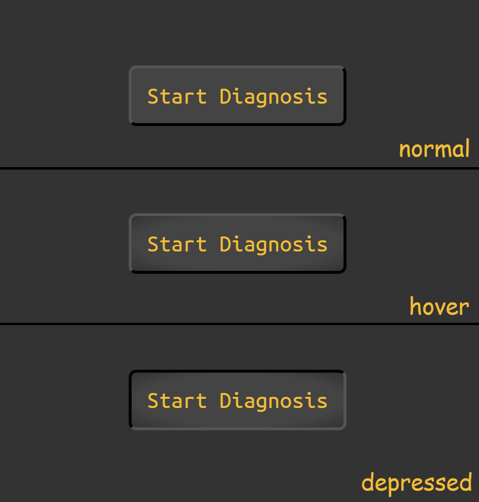

Live Coding Assessment - Interactive Button Creation
Description:
Welcome to the live coding assessment at Karl-Heintz Schmidt und Söhne.
In this session, you will create an interactive button for our web
portal designed for mechanics. The button will be based on a given
description and a screenshot. You will need to use HTML, CSS, and
optionally JavaScript to complete the task while interacting with the
interviewer.
Button Description:
- The button should have a label "Start Diagnosis."
- The text color should be #eebd3c (goldenrod).
- The button background color is #444444 (a dark gray).
- The body background color is #333333 (a darker gray).
- The button should have a subtle shadow effect on hover.
-
When clicked, the button should display an alert with the message
"Diagnosis initiated."
Button Screenshots:

Requirements:
- Create the HTML structure for the button.
-
Apply CSS styles to match the provided description and screenshot.
-
Optionally, implement JavaScript functionality to enhance
interactivity beyond the basic click event.
Assessment objectives:
-
The interviewer will present the button description and screenshot to
you.
-
The interviewer will provide a code editor and a starting HTML
template.
-
You will code and style the button while discussing your approach with
the interviewer.
-
Optionally, you can demonstrate the JavaScript functionality during
the assessment.
-
Explain your thought process and any decisions made while coding.
Interviewer's Role:
-
The interviewer will be actively participating, providing guidance and
feedback throughout the assessment.
-
Feel free to ask questions or seek clarification on any requirements
during the session.
-
The interviewer is interested in understanding your problem-solving
approach and coding skills.
Evaluation Criteria:
- Adherence to the button description and style.
- Proper use of HTML, CSS, and, if applicable, JavaScript.
-
Demonstration of problem-solving and coding skills during the live
session.
- Clear communication and collaboration with the interviewer.
The live coding assessment provides an opportunity for you to showcase
your coding abilities while engaging in real-time discussions with the
interviewer. The focus is not just on the final output but on your
thought process and interaction throughout the assessment.
We hope you find this experience rewarding, and we look forward to
seeing your implementation and hearing about your approach to solving
the challenge.
Best of luck with the assessment!
Karl-Heintz Schmidt und Söhne
Back to homepage